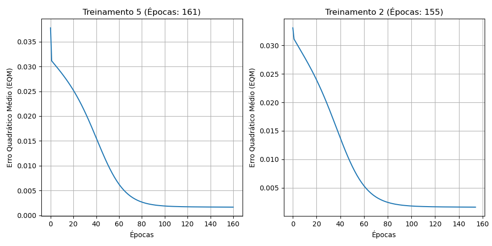

| Treinamento | Erro Quadrático Médio | Número de Épocas |
|---|---|---|
| 1º (T1) | 0.001592 | 143 |
| 2º (T2) | 0.001612 | 155 |
| 3º (T3) | 0.001555 | 128 |
| 4º (T4) | 0.001583 | 154 |
| 5º (T5) | 0.001645 | 161 |
Os gráficos do Erro Quadrático Médio em função das épocas estão na imagem abaixo (grafico_eqm.png):

| Amostra | x1 | x2 | x3 | d | y_rede (T1) | y_rede (T2) | y_rede (T3) | y_rede (T4) | y_rede (T5) |
|---|---|---|---|---|---|---|---|---|---|
| 1 | 0.0611 | 0.2860 | 0.7464 | 0.4831 | 0.4914 | 0.4930 | 0.4958 | 0.4971 | 0.4935 |
| 2 | 0.5102 | 0.7464 | 0.0860 | 0.5965 | 0.6016 | 0.6018 | 0.6030 | 0.6033 | 0.6034 |
| 3 | 0.0004 | 0.6916 | 0.5006 | 0.5318 | 0.5343 | 0.5361 | 0.5379 | 0.5383 | 0.5371 |
| 4 | 0.9430 | 0.4476 | 0.2648 | 0.6843 | 0.7174 | 0.7167 | 0.7177 | 0.7169 | 0.7160 |
| 5 | 0.1399 | 0.1610 | 0.2477 | 0.2872 | 0.2840 | 0.2854 | 0.2829 | 0.2820 | 0.2808 |
| 6 | 0.6423 | 0.3229 | 0.8567 | 0.7663 | 0.7624 | 0.7647 | 0.7614 | 0.7618 | 0.7641 |
| 7 | 0.6492 | 0.0007 | 0.6422 | 0.5666 | 0.5795 | 0.5802 | 0.5794 | 0.5829 | 0.5824 |
| 8 | 0.1818 | 0.5078 | 0.9046 | 0.6601 | 0.6903 | 0.6932 | 0.6915 | 0.6915 | 0.6922 |
| 9 | 0.7382 | 0.2647 | 0.1916 | 0.5427 | 0.5423 | 0.5414 | 0.5435 | 0.5439 | 0.5426 |
| 10 | 0.3879 | 0.1307 | 0.8656 | 0.5836 | 0.6133 | 0.6162 | 0.6144 | 0.6175 | 0.6173 |
| 11 | 0.1903 | 0.6523 | 0.7820 | 0.6950 | 0.7016 | 0.7035 | 0.7022 | 0.7020 | 0.7031 |
| 12 | 0.8401 | 0.4490 | 0.2719 | 0.6790 | 0.6855 | 0.6851 | 0.6862 | 0.6859 | 0.6850 |
| 13 | 0.0029 | 0.3264 | 0.2476 | 0.2956 | 0.2924 | 0.2951 | 0.2923 | 0.2915 | 0.2891 |
| 14 | 0.7088 | 0.9342 | 0.2763 | 0.7742 | 0.7897 | 0.7882 | 0.7877 | 0.7880 | 0.7888 |
| 15 | 0.1283 | 0.1882 | 0.7253 | 0.4662 | 0.4702 | 0.4711 | 0.4741 | 0.4758 | 0.4720 |
| 16 | 0.8882 | 0.3077 | 0.8931 | 0.8093 | 0.8249 | 0.8256 | 0.8228 | 0.8220 | 0.8253 |
| 17 | 0.2225 | 0.9182 | 0.7820 | 0.7581 | 0.7885 | 0.7874 | 0.7856 | 0.7847 | 0.7868 |
| 18 | 0.1957 | 0.8423 | 0.3085 | 0.5826 | 0.6002 | 0.6009 | 0.6013 | 0.6021 | 0.6033 |
| 19 | 0.9991 | 0.5914 | 0.3933 | 0.7938 | 0.8055 | 0.8051 | 0.8048 | 0.8038 | 0.8037 |
| 20 | 0.2299 | 0.1524 | 0.7353 | 0.5012 | 0.5030 | 0.5042 | 0.5062 | 0.5085 | 0.5055 |
| Erro Relativo Médio (%) | 1.9065% | 1.9403% | 2.0946% | 2.2256% | 2.1846% | ||||
| Variância (%) | 2.3468% | 2.6725% | 2.1160% | 2.2218% | 2.4007% | ||||